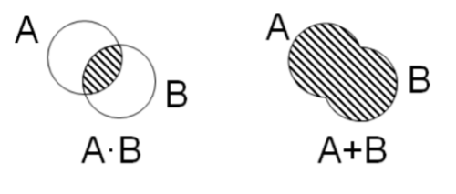

Информатика ОГЭ:
Разбор задание №8
Поисковые запросы:
операция «И» (&) в поисковом запросе всегда ограничивает поиск (уменьшает количество страниц в выдаче), т. е., в ответ на запрос яблоко И груша поисковый сервер выдаст меньше страниц, чем на запрос яблоко, потому что будет искать страницы, на которых присутствуют оба этих слова;
чем больше в запросе операций «И», тем меньше результатов
операция «ИЛИ» (|) в поисковом запросе всегда расширяет поиск (увеличивает количество страниц в выдаче), т. е., в ответ на запрос яблоко ИЛИ груша поисковик выдаст больше страниц, чем на запрос яблоко, потому что будет искать страницы, на которых присутствует хотя бы одно из этих слов (или сразу оба слова).
чем больше в запросе «ИЛИ», тем больше результатов
Круги Эйлера-Вена:
Решать 8 задание также можно, представляя запрос в виде кругов Эйлера-Вена: круги эйлера для решения 8 задания ОГЭ:
Операция «И» представляется как умножение (пересечение).
Операция «ИЛИ» представляется как сложение (объединение).
Заштрихованная область при объединении больше, чем при пересечении.
Первая задача:
Известно количество сайтов, которых находит поисковый сервер по следующим запросам :
| Ключевое слово | Количество сайтов, для которых данное слово является ключевым |
| Глинка & Лист | 320 |
| Бах & Лист | 280 |
| (Глинка | Бах) & Лист | 430 |
Сколько сайтов будет найдено по запросу: Глинка & Бах & Лист?
Решение:
- Упрощение логических выражений:
(A & B) | C = (A | C) & (B | C)
(A | B) & C = (A & C) | (B & C)
Вторая задача:
В языке запросов поискового сервера для обозначения логической операции «ИЛИ» используется символ «|», а для обозначения логической операции «И» – символ «&»
В таблице приведены запросы и количество найденных по ним страниц некоторого сегмента сети Интернет.
Какое количество страниц (в тысячах) будет найдено по запросу Рыбка?
Считается, что все запросы выполнялись практически одновременно, так что набор страниц, содержащих все искомые слова, не изменялся за время выполнения запросов.
| Запрос | Найдено страниц (в тысячах) |
| Рыбак | Рыбка | 780 |
| Рыбак | 260 |
| Рыбак & Рыбка | 50 |
Решение:
- Сначала отобразим первую строку таблицы — т.е. операцию ИЛИ (|), которая обозначает объединение одновременно двух кругов:
- Для второй строки таблицы отобразим отдельный круг, соответствующий количеству страниц для слова Рыбак:
- В третьей строке наблюдаем операцию И (&), что соответствует области пересечения кругов:
- Поскольку в задании требуется найти запрос Рыбка, то для начала нам необходимо из общего объединения, т.е. из первого изображения, «вычесть» результат второго изображения, т.е. Рыбак; получим:
- Теперь, чтобы получить полностью число страниц для запроса Рыбка, необходимо добавить область пересечения кругов, которая равна 50 (вычисление для третьей строки); т.е. получим:
520 + 50 = 570
Ответ: 570